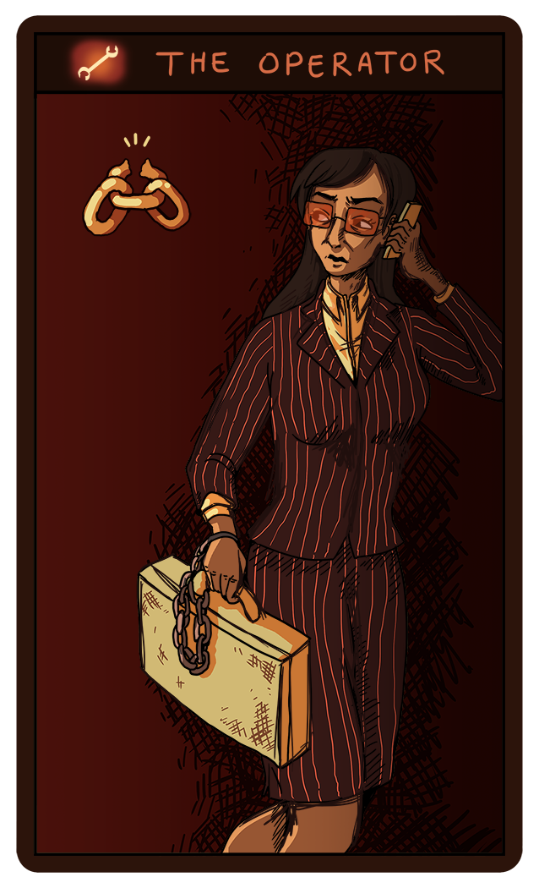
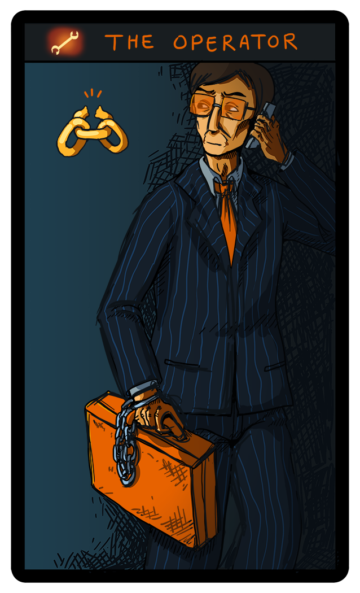
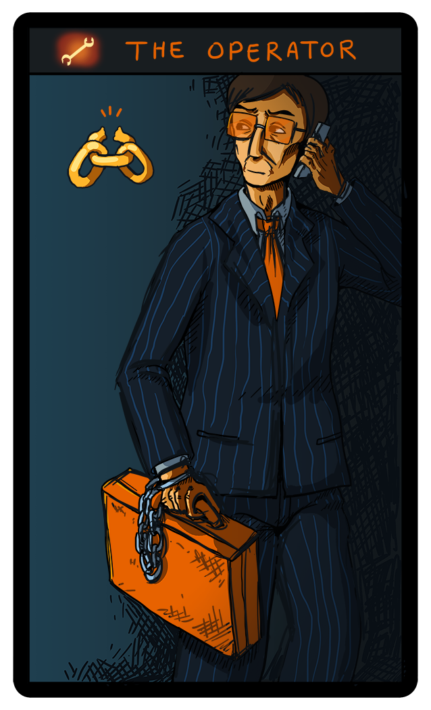
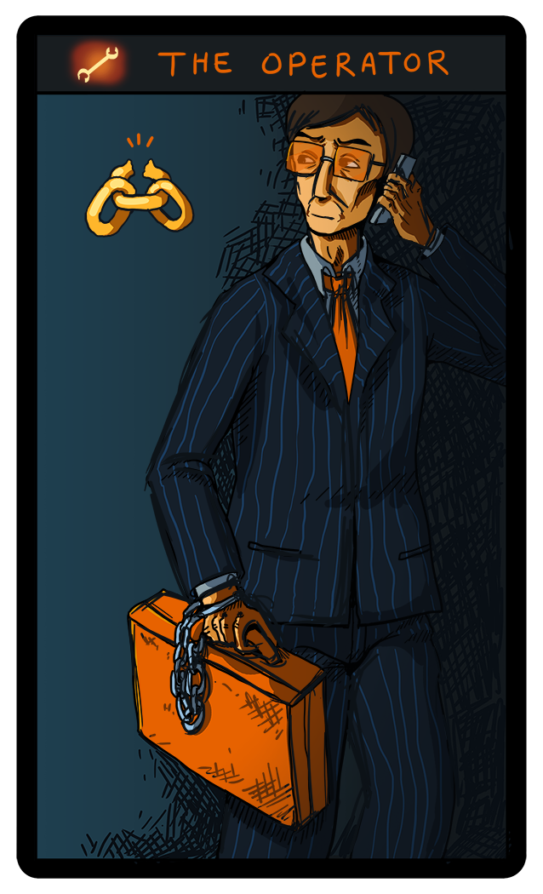

Operator
Voice

 


Goal-oriented reformer, figures out how to do it. You can sometimes get stuck defending the indefensible. Once you understand which side you're on, you work to make it the winning side. You detest by-the-book people and navigate by your own sense of right and wrong. You see yourself as a general of reform revolutions. You find you often need to rely a lot on foot soldiers with more skills and are not always comfortable leading them, but you can create and defend organizations that protect them and allow them to figure out the details.The story of the operator is that of surviving a collapse and returning stronger than before.